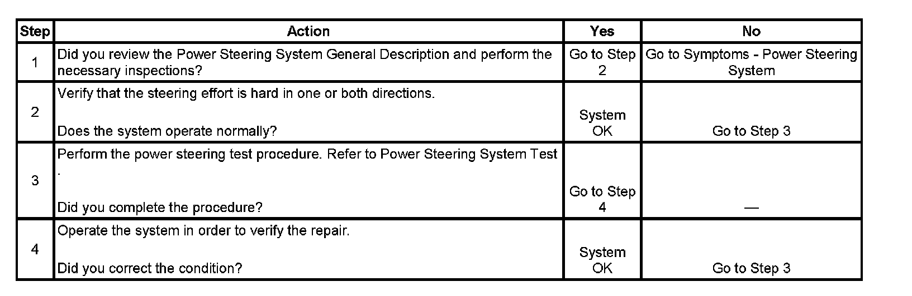

Operation CHARM
: Car repair manuals for everyone.
Home
>>
Cadillac
>>
2007
>>
Escalade ESV AWD V8-6.2L
>>
Repair and Diagnosis
>>
Steering and Suspension
>>
Steering
>>
Testing and Inspection
>>
Symptom Related Diagnostic Procedures
>>
Steering Effort Hard In One or Both Directions
Steering Effort Hard In One or Both Directions
Steering
Effort Hard in One or Both Directions
Step 1 - Step 4:
